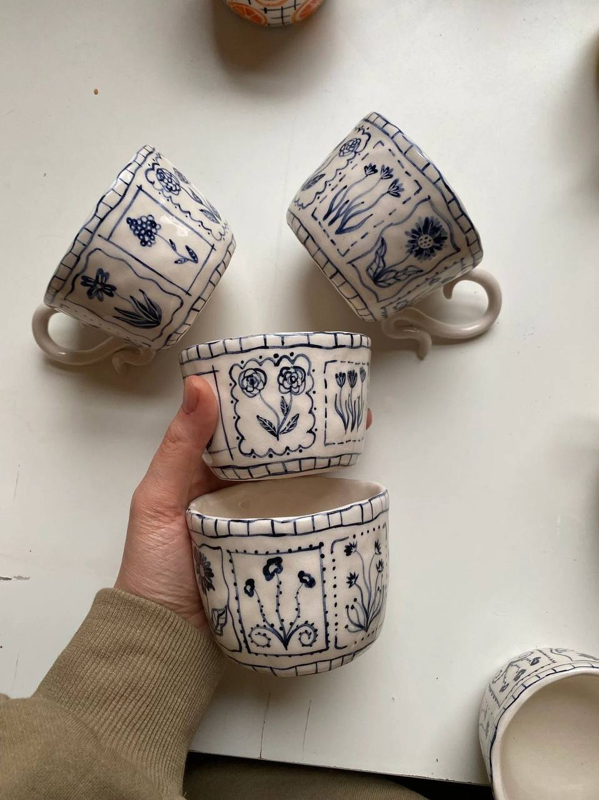
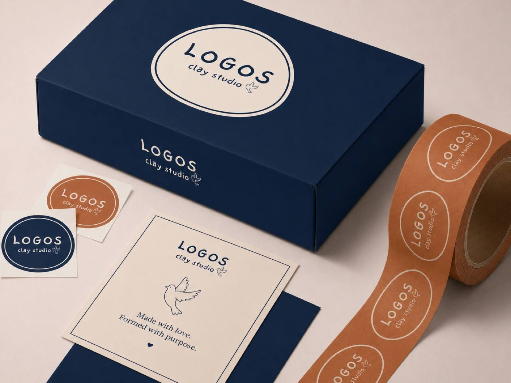
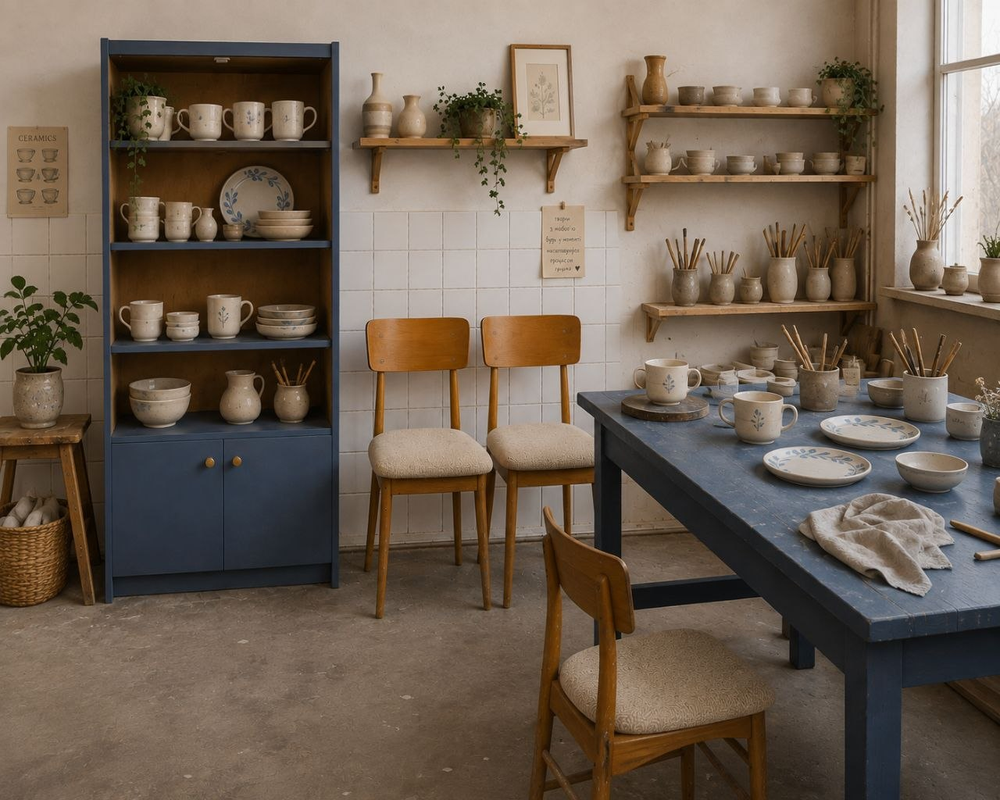
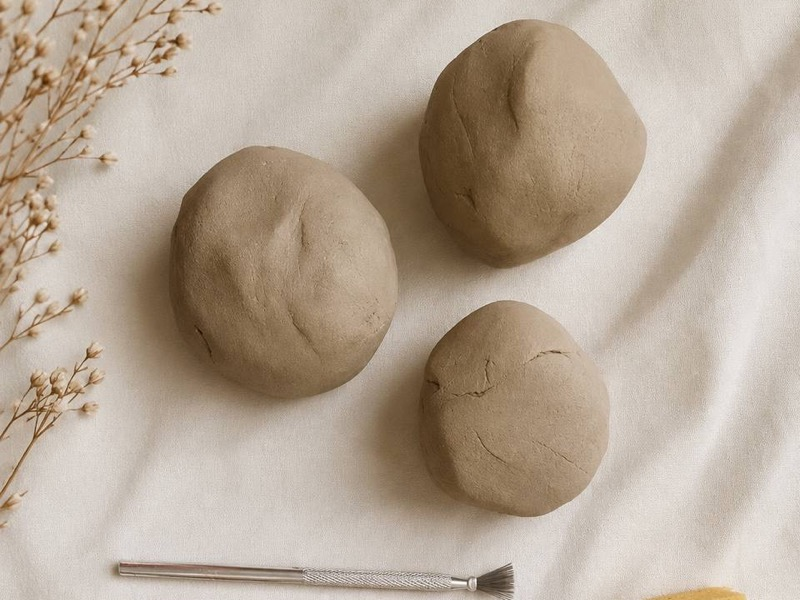
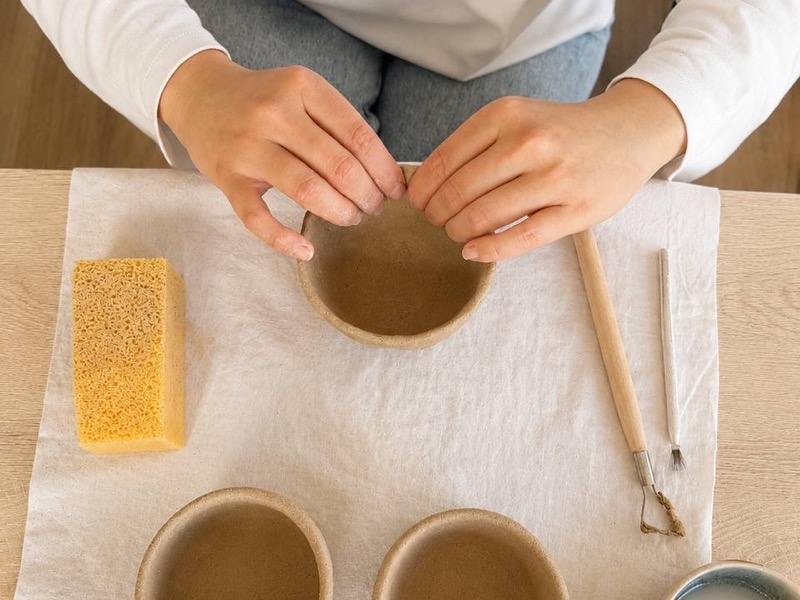
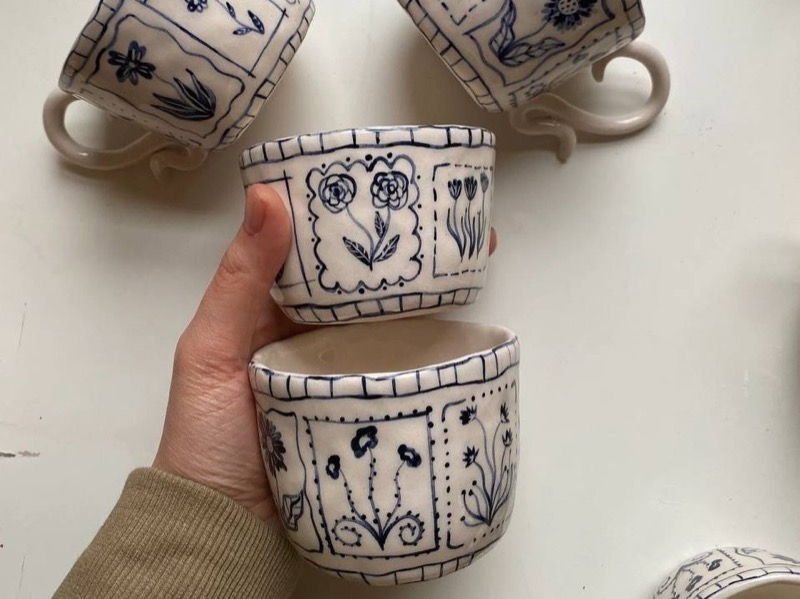
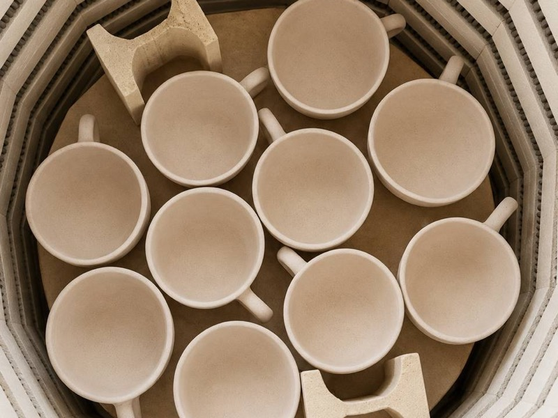
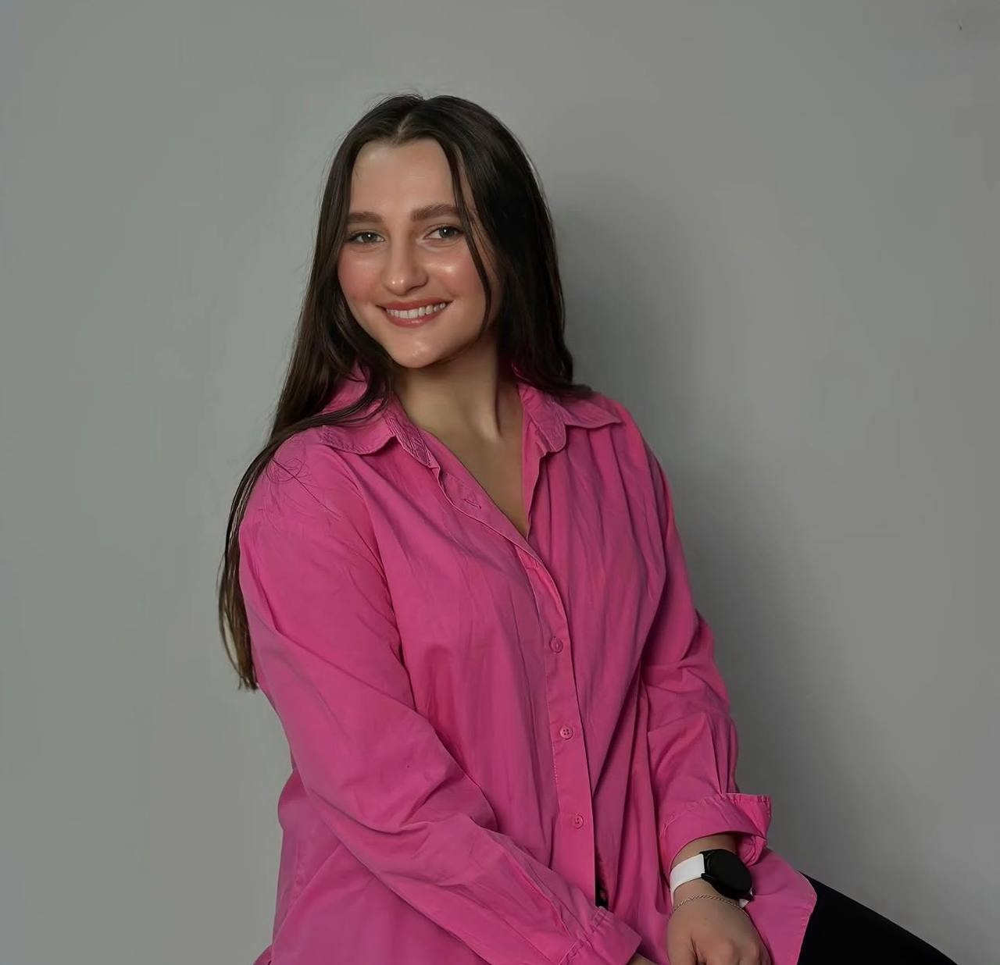
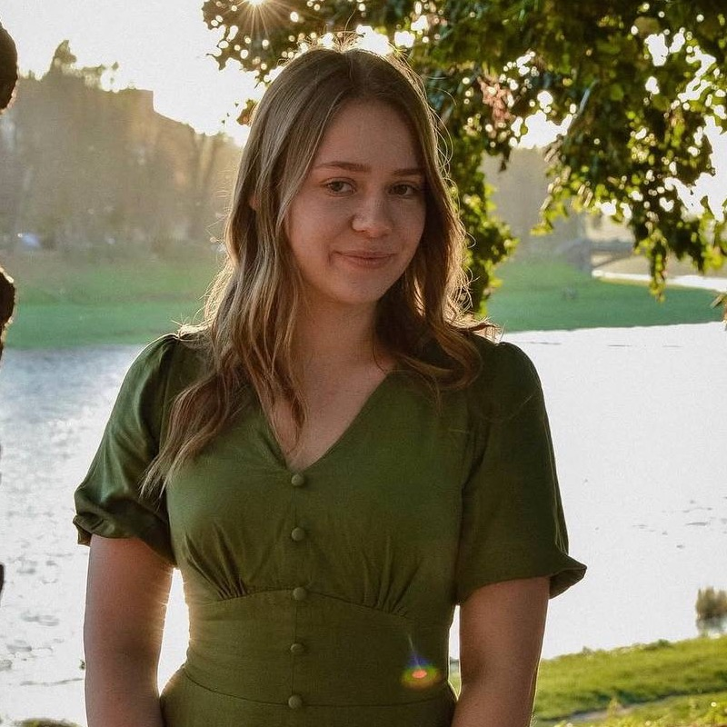
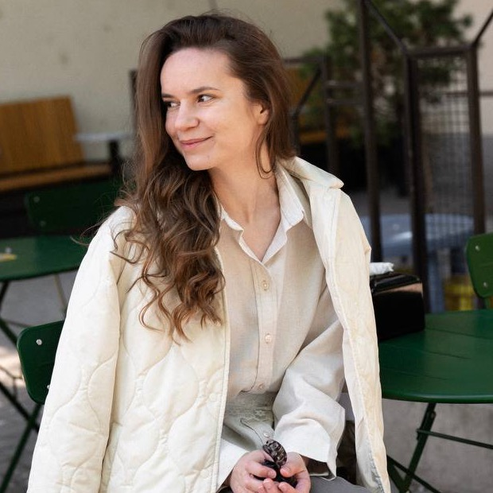

Все зроблено
руками
Розпис від руки
Кобальт наноситься пензлем — без трафаретів і переводок. Кожен сюжет малюється заново, тому двох однакових речей не буває навіть в одному наборі.

Пакування з сенсом
Темно-синя коробка й теракотова стрічка — або навпаки. На бірці силует голуба і рядок «Made with love. Formed with purpose.»
Той самий рядок ми вибиваємо штампом по сирій глині на маленьких тарілочках — бірка й виріб говорять однією мовою.

Наша студія
Полиці з роботами, що сохнуть, гончарний круг і піч на 1250 °C. Тут річ проводить три тижні, перш ніж поїхати до вас.

«Як глина в руці гончаря,
так ви в Моїй руці»
Єремія 18:6
Що зараз у студії
Невеликі партії. Наявне — у магазині на Etsy, там же ціни й доставка.
Як народжується річ
Чотири етапи, три тижні й жодного способу прискорити.
-

1Глина
Вимішуємо масу до однорідності. Жодної бульбашки повітря — випал такого не пробачає.
-

2Форма
Круг або ліплення руками. Хвилястий край — не помилка, а те, за чим повертаються.
-

3Розпис
Найдовший етап. Кобальт пензлем, від руки, без трафаретів і переводок.
-

4Випали
900 °C, потім глазур і 1250 °C. Справжній колір проявляється тільки тут.
Logos Clay Studio
Logos грецькою — «Слово». Для нас це більше, ніж назва. Where the Word meets clay — де Слово зустрічає глину. Глина символізує людину й творення, а Слово — сенс і напрямок. Тому наше Formed with purpose означає: сформовано з сенсом.
У візуальній мові бренду глина уособлює природність і тепло рук, синій — небо, глибину та спокій, а голуб — мир, чистоту й Святого Духа. Кожен виріб ми створюємо вручну — від формування глини до останнього мазка пензлем.
- Кожен виріб створений вручну
- Приймаємо замовлення на індивідуальні сюжети
- Відправляємо по Україні та за кордон
-

Белла
Співзасновниця · форма та кераміка
-

Надія
Співзасновниця · комунікація та замовлення
-

Віра
Співзасновниця · розпис та візуальна мова
Заберіть свою
Наявне — на Etsy. Нове — спершу в Instagram, часто розходиться ще до магазину.